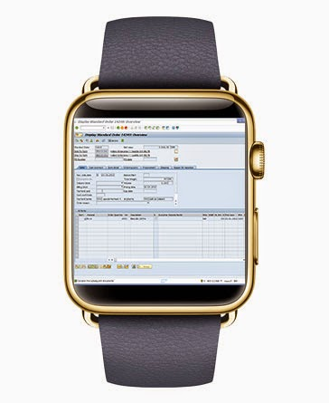
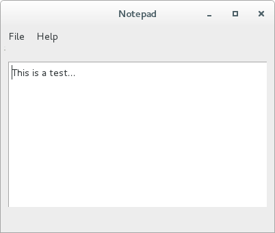

IHM Using Qt to build a first GUI
Andres Perez-Uribe
Hector Satizabal

SAP GUI for the gold version Apple Watch ?
(from mindsetconsulting blog)"A picture is worth a thousand words.
An interface is worth a thousand pictures."Ben Shneiderman
The goal of this laboratory is to explore the use of Qt as a means to build Graphical User Interfaces while considering the fundamental principles of design, proposed by Don Norman.
1. Hands on Qt
Qt ("cute" or unofficially "cue-tee") is a cross-platform application framework for developing application software that can be run on various software and hardware platforms with little or no change in the codebase.
Qt uses standard C++ with extensions including signals and slots that simplifies handling of events, and this helps in development of both GUI and server applications which receive their own set of event information and should process them accordingly.
Qt comes with its own set of tools to ease cross-platform development. Qt Creator is a cross-platform IDE for C++ and QML. In addition to Qt Creator, Qt provides a handy makefile generation tool, qmake, a tool that automates the generation of Makefiles for development project across different platforms. Without qmake, one should write different makefiles for each platform, so it is a useful tool for transparent handling of differences in various platforms.
Because of simplicity, robustness, native performance, cross-platform compatibility and both commercial and open source licenses, many organizations in many parts of the world use Qt. These include but are not limited to European Space Agency, DreamWorks, Lucasfilm, Panasonic, Philips, Samsung, Siemens, Volvo, Walt Disney Animation Studios, Blizzard Entertainment, Electronic Arts.
From Wikipedia.
There are plenty of Qt examples and tutorials on the Qt website. You are invited to follow in detail one or several of them during the development of the proposed exercises of this course.
In order to complete this laboratory, you should download and install Qt https://www.qt.io/download. Select the open source version.
2. A Notepad application
The Text Editor application is a very basic, but at the same time complete tutorial that will let you learn about Qt tools and Qt programming. There is also a video explaining with great detail every step about how to create a notepad application. Follow such tutorial and build a text editor having the following controls:
- A menu item for accessing functions related to file management
- A menu subitem for opening files: "Open"
- A menu subitem for saving files: "Save"
- A menu subitem for saving files with an alternative name: "Save as"
- A menu subitem to quit the application: "Quit"
- A menu item for accessing functions related to help
- A menu subitem showing information about how to use the program: "Help"
- A menu subitem showing information about the developers: "About"
- Add shortcuts for each one of the aforementioned functionalities
- Open -> Alt + O
- Save -> Alt + S
- Save as -> Alt + Shift + S
- Quit -> Alt + Q
- Help -> Alt + H
- About -> Alt + A
The following image shows an example of the interface you should program.
